3.4 Binary Search Trees
In a binary search tree , for every node, X, in the tree, the values of all the keys in the left subtree are smaller than the key value in X, and the values of all the keys in the right subtree are larger than the key value in X.
In following tree, identify BST.
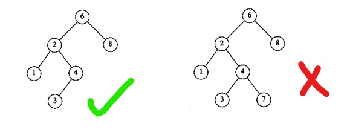
Supports following dynamic set operations
- Make the tree Empty
- Find an Element
- Find a Minimum element in tree
- Find a Maximum element in tree
- Insert an Element
- Delete an Element
Can be used to build
- Dictionaries.
- Priority Queues.
Basic operations take time proportional to the height of the tree - O(h).
Node Representation
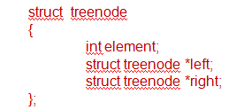
Use create node procedure to allocate memeory and make left and right to point to NULL.
Make the tree empty
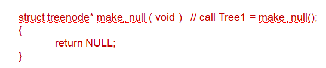
Find Operation
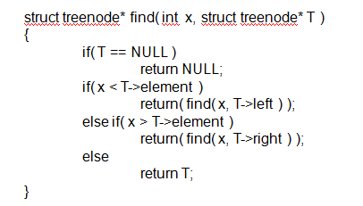
If T is NULL, then we can just return NULL.
Otherwise, if the key stored at T is x, we can return T.
Otherwise, we make a recursive call on a subtree of T, either left or right, depending on the relationship of x to the key stored in T.
Binary Search Tree - FindMin Operation
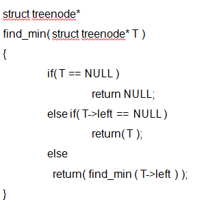
To perform a find_min, start at the root and go left as long as there is a left child.
The stopping point is the smallest element.
Binary Search Tree - FindMax Operation
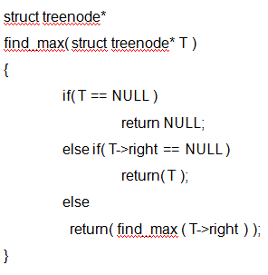
To perform a find_max, start at the root and go right as long as there is a right child.
The stopping point is the largest element.
FindMin - Non Recursive Version
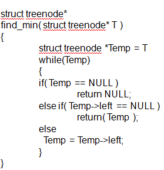
FindMax - Non Recursive Version
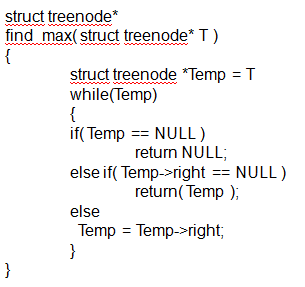
Binary Search Tree - Insert Operation
Start from the root node if one such exists. Otherwise make this as root node
If the node to insert is less than the root, go to left child otherwise go to the right child of the root.
Continue this process (each node is a root for some sub tree) until a null pointer or leaf node is found and can not go any further.
If value at current node and new value are equal, no need to insert new value since already it exists in BST.
Insert the node as a left child if new value is less than current nodes key value.
Otherwise insert the node as a right child since new value is greater than current node.
A new node is always inserted as a leaf node.
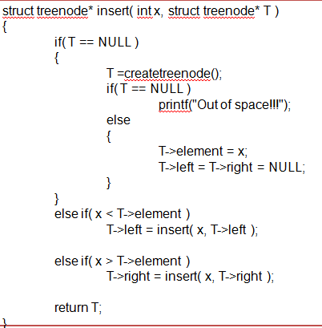
Binary Search Tree - Deletion Operation
In trees, the hardest operation is deletion.
If the node is a leaf, it can be deleted immediately.
If the node has one child, the node can be deleted after its parent adjusts a pointer to bypass the node.
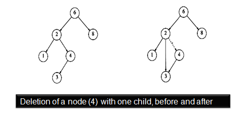
To delete a node with two children,
replace the key of this node with the smallest key of the right subtree and
recursively delete that node.
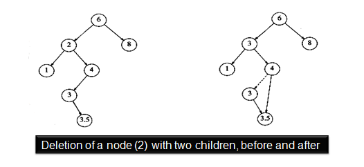
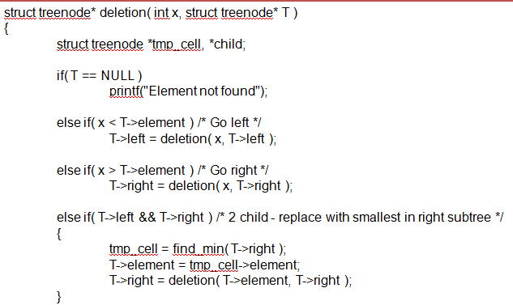
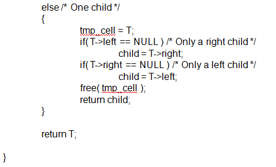